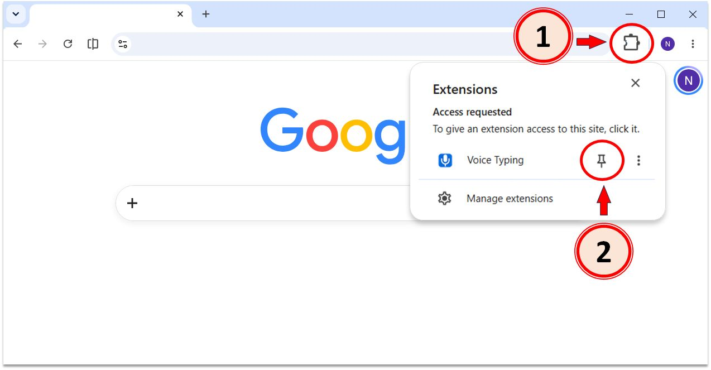
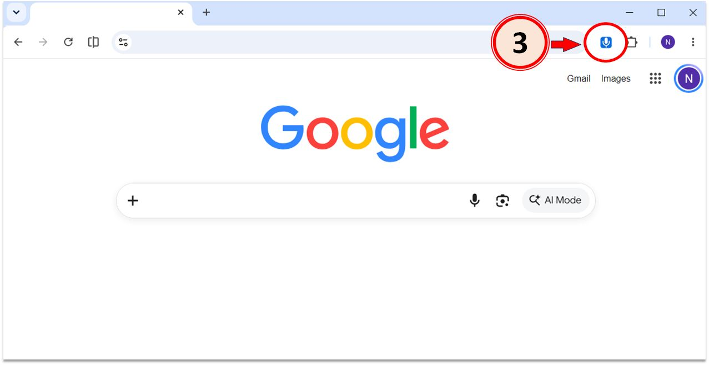

Voice Typing Installed
Click the puzzle piece (1) in the top right of your browser. Then, click the little pin (2) next to the extension:

Click the extension button (3) on any page to start using Voice Typing:


